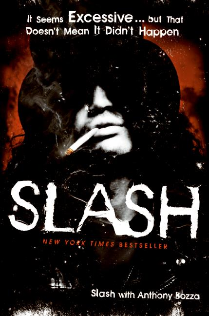
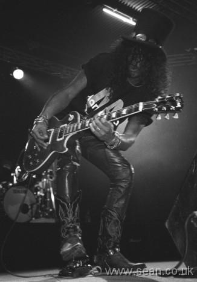

Hey guys, just thought I make a little topic about Slash's book and GNR.
Anyone like this band? Personally one of my favorite Hard Rock groups, I got the chance to Pick up Slash (the guitarist's) book titled, "It seems excessive, but that doesn't mean it didn't happen". If you like the band, I highly recc.. it. Some of the shit that the band does is absolutely nuts. Slash would deliberately ram his car into people on the road if he thought they were in his way....from the late 80's to early 90's Slash had been weaning this unruly heroin addiction that led to some absoulutely hilarious hallucinations. When he was in rehab, he saw little hallucinations that he described as mini aliens chasing him, he ran 4 miles on a fake chase, butt naked, and hid himself in a golf course. Furthermore, Axl, (the singer) would sometimes not show up for concerts, and even pick fights with fans in the audience, DURING THE SET....Oh, and my favorite.....one day when slash was in high school, he fell asleep in class. The teacher made fun of him while he was asleep, and stereotyped him as a, "stoner/rocker juvenile". Slash responded by flipping the teachers desk over and destroying the classroom....and then leaving!
Anyway, point and case, if you get the chance, and like the band, read the book:
Anyone like this band? Personally one of my favorite Hard Rock groups, I got the chance to Pick up Slash (the guitarist's) book titled, "It seems excessive, but that doesn't mean it didn't happen". If you like the band, I highly recc.. it. Some of the shit that the band does is absolutely nuts. Slash would deliberately ram his car into people on the road if he thought they were in his way....from the late 80's to early 90's Slash had been weaning this unruly heroin addiction that led to some absoulutely hilarious hallucinations. When he was in rehab, he saw little hallucinations that he described as mini aliens chasing him, he ran 4 miles on a fake chase, butt naked, and hid himself in a golf course. Furthermore, Axl, (the singer) would sometimes not show up for concerts, and even pick fights with fans in the audience, DURING THE SET....Oh, and my favorite.....one day when slash was in high school, he fell asleep in class. The teacher made fun of him while he was asleep, and stereotyped him as a, "stoner/rocker juvenile". Slash responded by flipping the teachers desk over and destroying the classroom....and then leaving!
Anyway, point and case, if you get the chance, and like the band, read the book:


 I guess. Oh well...
I guess. Oh well...